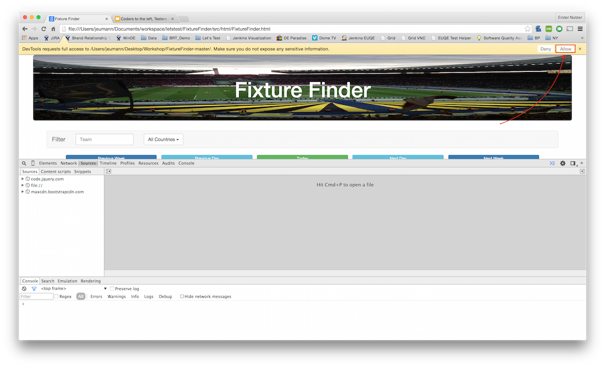

Step 1 - Download sources of example as zip file
Open the github page for FixtureFinder
Click on "Clone or download and then select "Download ZIP"
If you are familiar with git you can of course clone the repo as well.
Step 2 - Extract the zip file to a local folder
Step 3 - Open FixtureFinder.html in Chrome
Open the file FixtureFinderNTD-master/src/html/FixtureFinder.html in Chrome

Step 4 - Open Chrome Dev Tools
There are a couple of ways to open Chrome Dev Tools:
- View -> Developer -> Developer Tools
-
Keyboard Shortcuts:
Mac: Cmd + Opt (alt) + I
Windows: F12, Ctrl + Shift+ I
Right click on an element on the page and select "Inspect Element"

Step 5 - Go to Sources Panel

Step 6 - Add locally stored files as a folder to the workspace
- Right click in the white area below code.jquery.com, file:// and maxcdn.bootstrapcdn.com
- Select "Add folder to workspace" and select the folder where you extracted the download

Step 7 - Allow Chrome to access the local folder
This is necessary so that any change done in Chrome will be also done in the file system.

Step 8 - Map to Network Resource
This step will map the files from the Chrome workspace to the files on the disk. A change made in Chrome will be visibile in the file and a change made on a file, e.g. with a text editor, will be reflected in Chrome.
- Select FixtureFinder.html from the folder that you added to the workspace
- Right click, select "Map to Network Resource..."

Step 9 - Select the FixtureFinder.html file from the list

If you mapped the files correctly the file:// entry under Sources should be gone now. Any change you make in a text editor should be reflected in Chrome and any change in Chrome should be reflected on the file system.